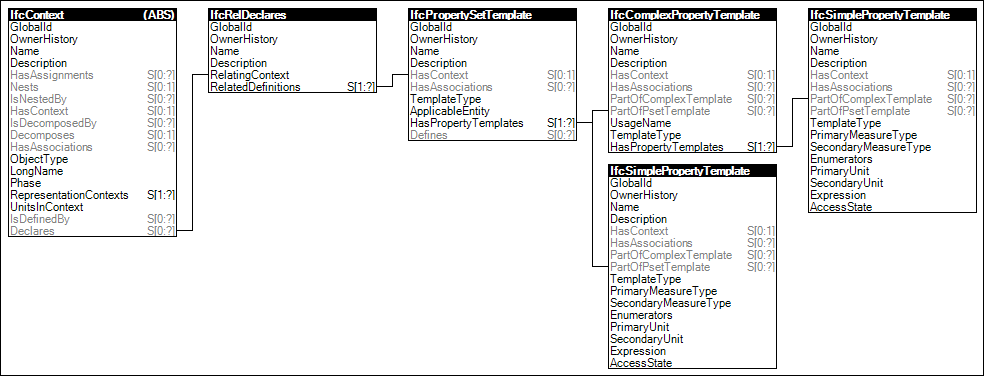

Link to this page
Link to this pageDeclaration of property set templates, including the property templates that are used as property definitions. Such templates define the applicable properties, their names, descriptions, measure types and property type (single, enumerated, bounded list or table value),
Figure 3 illustrates an instance diagram.
 |
Figure 3 — Property Set Templates |